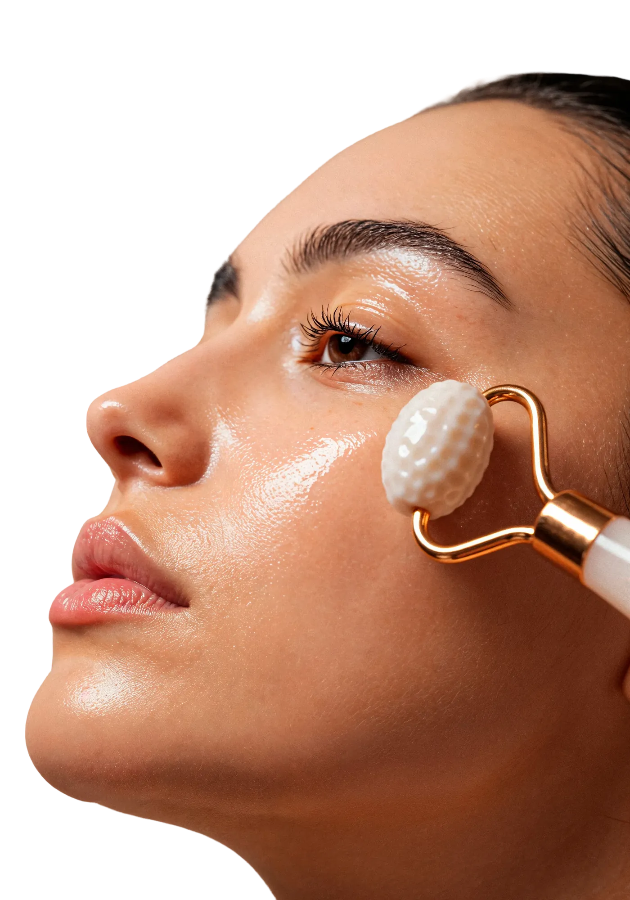
Estética avançada em Alphaville
Envelhecer é inevitável, mas parecer velha é uma opção.
Diminua rugas e linhas de expressão com um método personalizado desenvolvido exclusivamente para mulheres em Alphaville e região.
Transformações reais
Veja a diferença que o cuidado certo faz
Cada pele tem uma história. Antes de qualquer procedimento, realizamos um Diagnóstico de Pele aprofundado e montamos um tratamento pensado só para ela. Estes são alguns dos resultados.
Talvez esteja vivendo um destes momentos
O espelho muitas vezes reflete o estresse do dia a dia e a ação do tempo, trazendo sinais que não condizem com como nos sentimos por dentro. O cuidado certo é o espaço para resgatar a sua melhor versão.
-
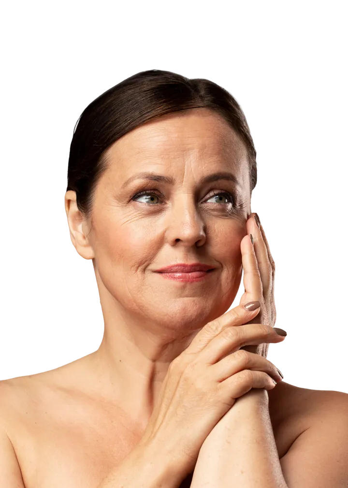
Sinais do tempo
Linhas de expressão marcadas, flacidez e a sensação de que o rosto está perdendo a sustentação e a firmeza natural da juventude.
-
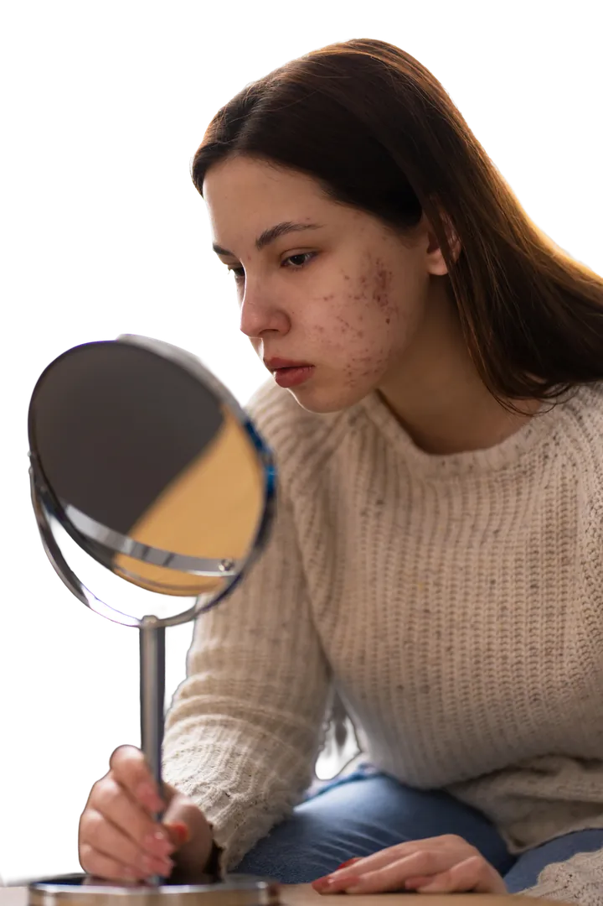
Acne e Oleosidade
Espinhas persistentes, cravos e inflamações que não apenas machucam a pele, mas afetam diretamente a sua autoestima e segurança.
-
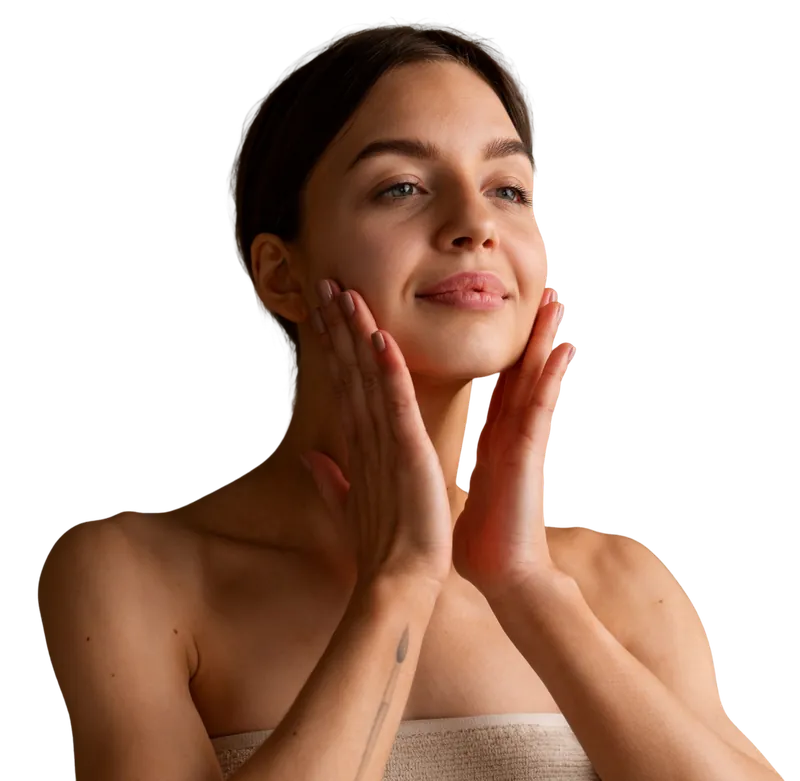
Textura e Poros Dilatados
Sensação de pele áspera, poros muito aparentes e dificuldade para manter um aspecto liso e uniforme no dia a dia.
Nossos tratamentos
Como podemos transformar a sua pele hoje?
Cada tratamento é planejado de forma individualizada, a partir de uma análise facial criteriosa e das necessidades de cada paciente. A proposta é promover equilíbrio, naturalidade e resultados elegantes, respeitando a individualidade e a harmonia facial.
-
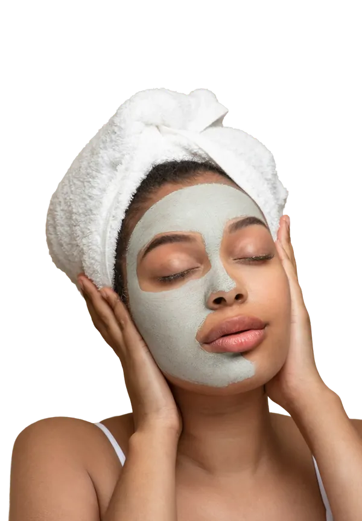
Tratamentos em destaqueLimpeza de Pele Personalizada
Procedimento personalizado para o seu biotipo cutâneo. Mantém a pele limpa, livre de cravos e melhora a textura e o viço. Finalizamos com alta frequência e Led/Laser para acelerar a recuperação.
Saiba mais sobre Limpeza de Pele Personalizada -
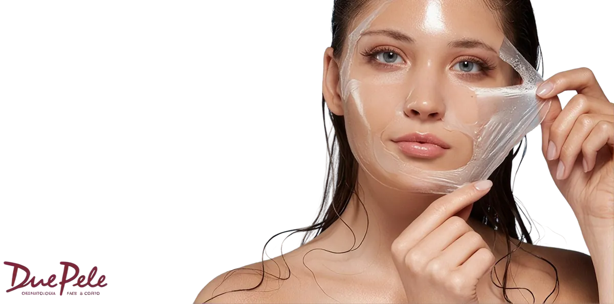
Tratamentos em destaquePeeling
Acelera o processo de renovação celular. Melhora a textura, previne o envelhecimento, minimiza manchas, reduz poros dilatados e auxilia fortemente no controle da acne.
Saiba mais sobre Peeling -
Microagulhamento
O verdadeiro estímulo de colágeno para uma pele mais firme. Atenua linhas de expressão e rugas, afina a aparência dos poros, devolve o viço e ilumina o rosto.
Saiba mais sobre Microagulhamento -
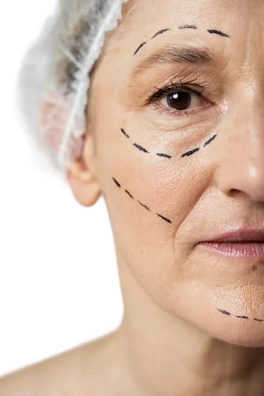
Lifting Facial
Promove um lifting instantâneo com efeito cumulativo. Diminui linhas finas, entrega uma aparência de pele descansada e gera um estímulo leve de colágeno para maior firmeza.
Saiba mais sobre Lifting Facial -
Spa Facial
A revitalização que seu rosto pede. Devolve viço, maciez e hidratação profunda de forma totalmente personalizada.
Saiba mais sobre Spa Facial -
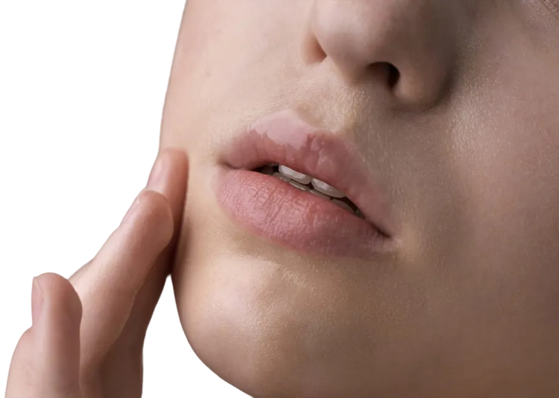
Lábios de Seda
Microagulhamento labial totalmente indolor. Remove células mortas, hidrata de dentro para fora e realça o contorno dos lábios. Promove um aumento leve do volume e suaviza as linhas de expressão (código de barras).
Saiba mais sobre Lábios de Seda
Quem é a sua esteticista
Quem está por trás do seu cuidado
Muito prazer, eu sou Thais Tutuy. Sou especialista em estética facial e a criadora do Método Efeito ViraTempo. Minha missão sempre foi ir além da superfície da pele e dos protocolos engessados. Eu acredito que a estética deve ser um ato de cuidado profundo, onde cada pele é ouvida, interpretada e respeitada.
Ao longo da minha trajetória, vi muitas pacientes frustradas com tratamentos genéricos que não entregavam o prometido. Foi isso que me motivou a desenvolver uma abordagem totalmente focada na individualidade e no gerenciamento inteligente da pele. O meu objetivo é entregar resultados reais, elegantes e duradouros, sem perder a naturalidade das suas expressões.
Aqui, o meu compromisso é devolver a sua autoestima e mostrar que a sua melhor versão já existe, só precisa do direcionamento e do cuidado certo para revelar toda a sua luminosidade.
Localização
Venha nos visitar em Alphaville
Clínica Thais Tutuy Estética Avançada
Al. Rio Negro, 1084 – Alphaville Industrial
Barueri – SP
Atendimento com hora marcada. Fale com a gente pelo WhatsApp para agendar a sua avaliação.
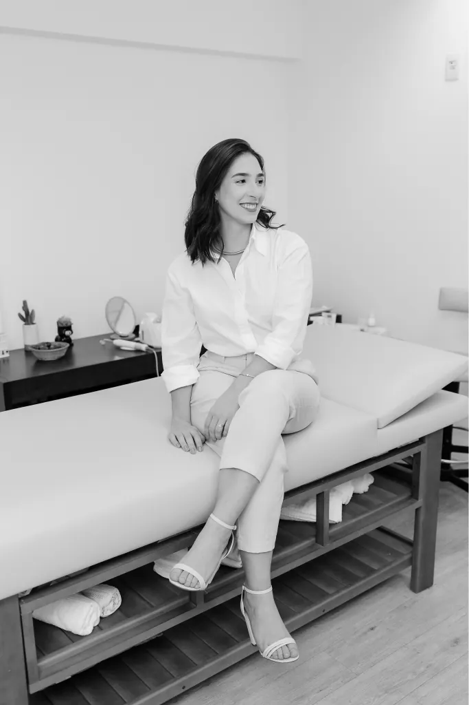
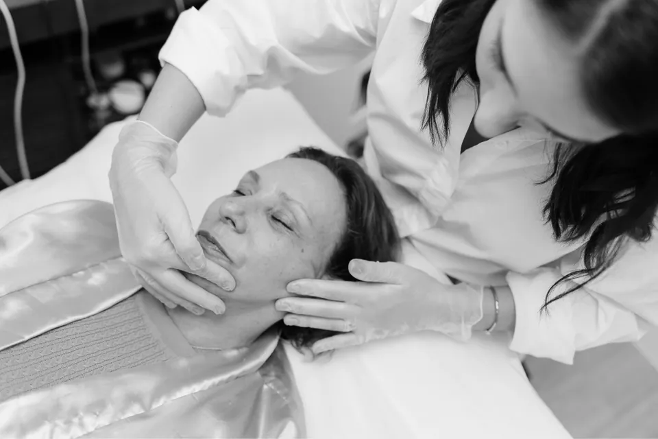
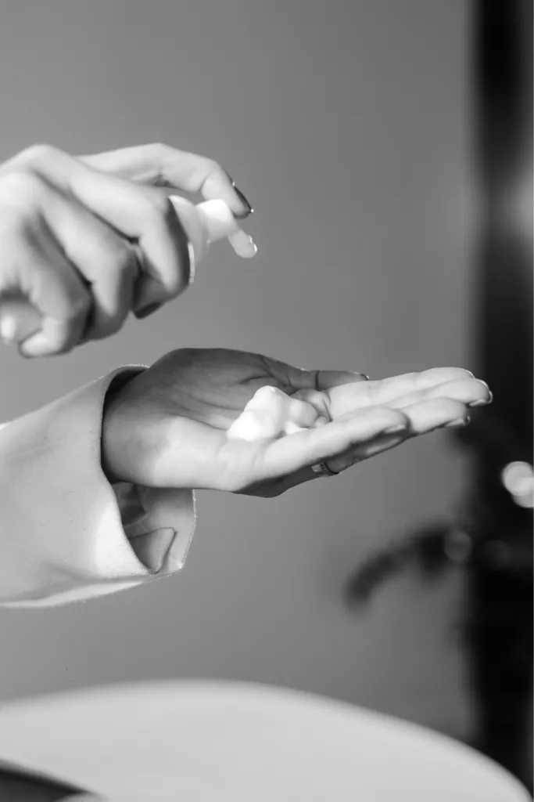
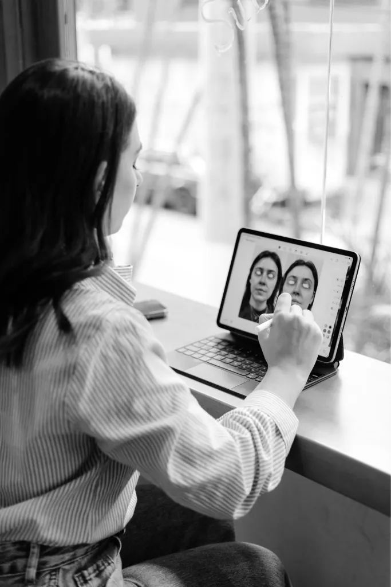
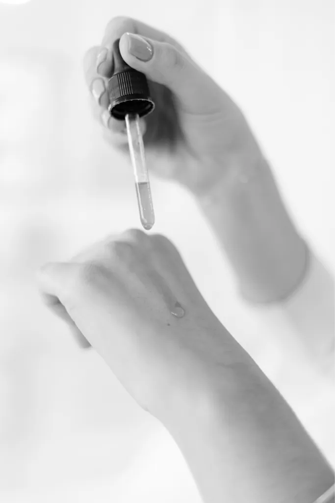
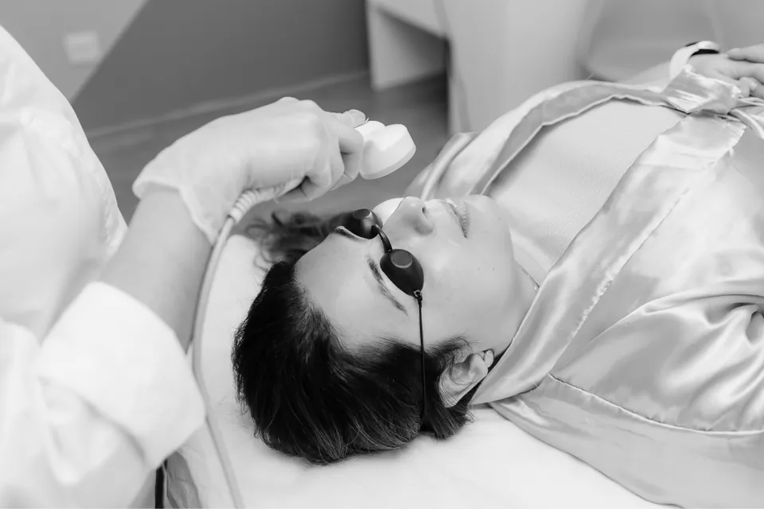
Nosso e-book
O primeiro passo para a sua melhor versão
Sua pele sempre dá sinais do que precisa. O nosso trabalho é interpretar cada um deles. Antes de qualquer procedimento, realizamos um Diagnóstico de Pele aprofundado para entender exatamente o que está causando suas queixas.
Bônus Exclusivo:
Ao realizar o seu diagnóstico conosco, você ganha acesso ao nosso E-book Exclusivo, um guia prático para você manter os cuidados em casa e prolongar os resultados do consultório, entendendo de vez como cuidar do seu tipo de pele no dia a dia.
Dúvidas frequentes
Dúvidas comuns sobre os nossos tratamentos.
Tudo começa com um Diagnóstico de Pele aprofundado. A partir dele, montamos um plano 100% personalizado, combinando os tratamentos certos para a sua pele e ajustando cada etapa conforme a evolução. O objetivo é estimular o colágeno e devolver firmeza, viço e luminosidade de forma natural, sem botox e sem agulha.
Você não precisa escolher sozinha. Na avaliação, analisamos o seu tipo de pele, as suas queixas e a sua rotina. Com isso, indicamos o protocolo mais adequado e explicamos cada passo antes de começar.
Os tratamentos são pensados para serem confortáveis e, na maioria dos casos, você volta à rotina no mesmo dia. Alguns procedimentos podem deixar a pele levemente avermelhada por algumas horas. Todas as orientações de cuidado são passadas na avaliação.
Prova social
O que meus pacientes dizem:
- Pacientes atendidos
- +100
- De satisfação
- 98%
-
Letícia Sarkis
Avaliação no Google
Profissional incrível! Desde a avaliação me senti extremamente confortável e segura no atendimento da Thaís! Ela explica tudo com muita clareza e cuidado! Estou em tratamento com ela desde março e já sinto muita diferença na minha pele, está mais macia, com aspecto mais jovem e menos cansado! Ao aderir a um protocolo, ela monta sua rotina de skincare o que faz total diferença no dia dia! Super recomendo a todos que buscam tratamento efetivo e de qualidade na região de Alphaville!
-
Renata Cagliarani
Avaliação no Google
Há mais de um ano frequento a clínica da Thais. Ela é uma profissional muito atenciosa, querida e cuida mesmo das clientes ❤️ Antes de começar o tratamento, eu tinha muitas queixas sobre meu rosto. Eu sentia minha pele apagada, com manchinhas mais escuras que me incomodavam, olheiras, algumas espinhas e eu praticamente não cuidava. Hoje ela está bem diferente. A Thais conseguiu melhorar muito a minha pele sem intervenções agressivas, com uma abordagem mais natural que eu gosto muito. Ela analisa e faz todo um protocolo de tratamento. Minha pele melhorou muito nas manchas, nas olheiras, no controle das espinhas, na hidratação, no brilho, no viço e até na prevenção do envelhecimento :) Hoje tenho uma rotina de skincare orientada por ela, estou sempre aprendendo a cuidar melhor da minha pele, e minha autoestima melhorou muito. As consultas sempre agradáveis e praticamente terapêuticas! Recomendo demais 🤗
-
Thais Mendes
Avaliação no Google
Comecei meu tratamento por contas das espinhas hormonais que estavam me incomodando. Acreditei que por serem hormonais não tinha o que fazer. Conheci a Thais Tutuy pesquisando na internet e fechei um pacote de tratamento. Minha pele melhorou 1000%! Vale muito a pena. Indico de olhos fechados! Ainda por cima conheci essa pessoa incrível que é a Thais. Vale muito a pena, estou muito satisfeita com minha pele e já quero fechar novos pacotes para cuidar de outros aspectos da pele!
-
Laissa Araújo
Avaliação no Google
Desde o primeiro atendimento, fica evidente o carinho, a dedicação e o profissionalismo. Tudo é feito de forma personalizada, com muita atenção às necessidades de cada cliente, o que faz toda a diferença. Os produtos utilizados são excelentes e o cuidado em cada etapa do procedimento é impecável. O mais incrível é que até uma limpeza de pele, que poderia ser algo simples, se transforma em uma verdadeira experiência de bem-estar e relaxamento. É um momento de autocuidado que renova não só a pele, mas também as energias. É uma profissional que ama o que faz, e isso transparece em cada detalhe. Recomendo para quem busca resultados, qualidade e um atendimento humano e acolhedor.
-
Daiane
Avaliação no Google
Excelente profissional! Estou fazendo um acompanhamento com limpezas de pele e peelings, e estou muito satisfeita com o atendimento. Ela é muito atenciosa, cuidadosa, solícita e explica tudo com muita clareza. Já estou percebendo a evolução da minha pele e recomendo de olhos fechados! 💖💖💖